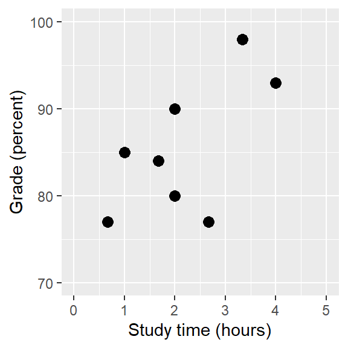
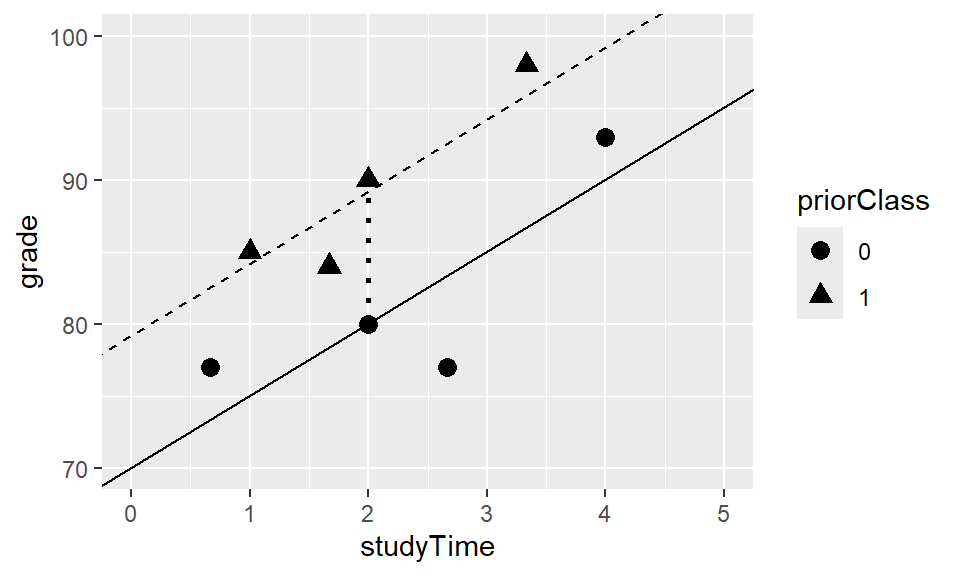
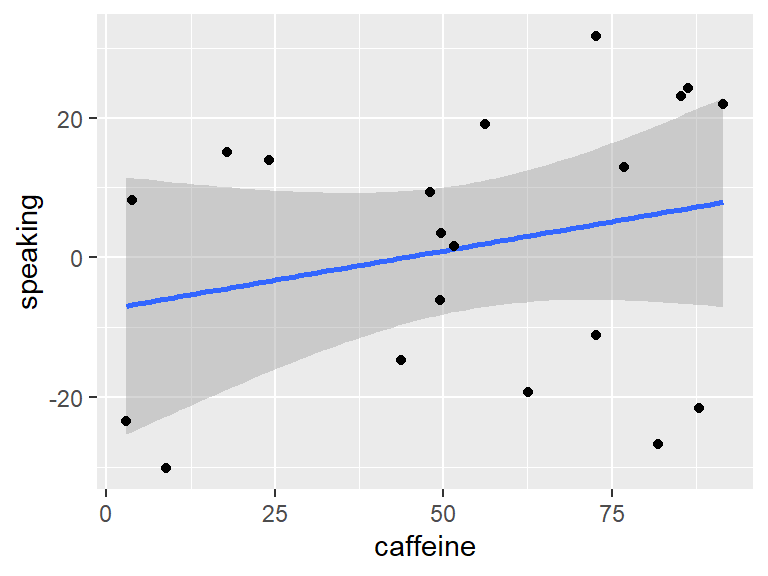
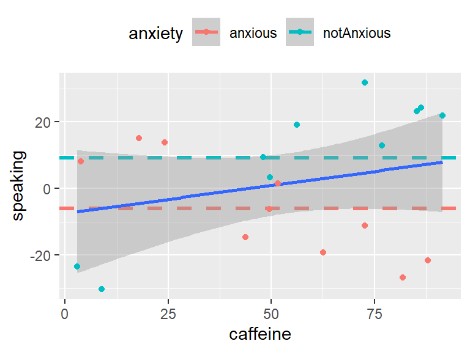
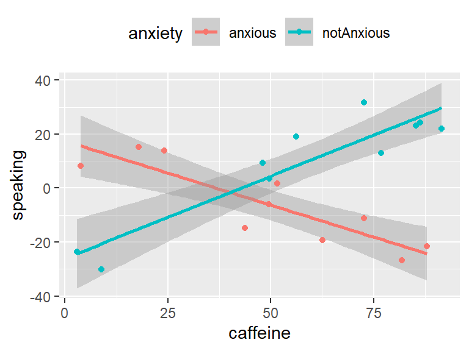
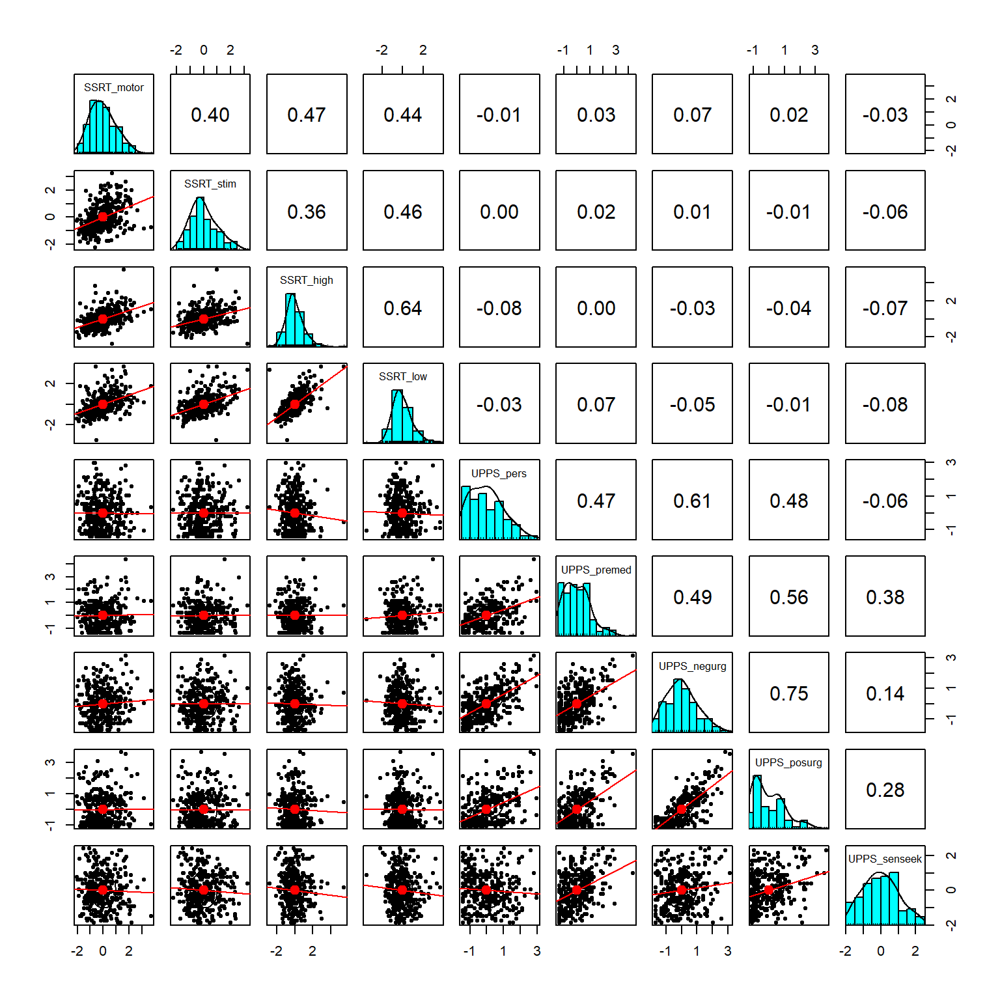
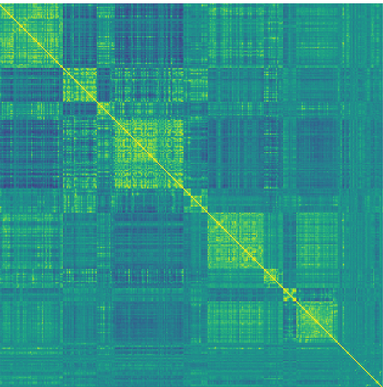
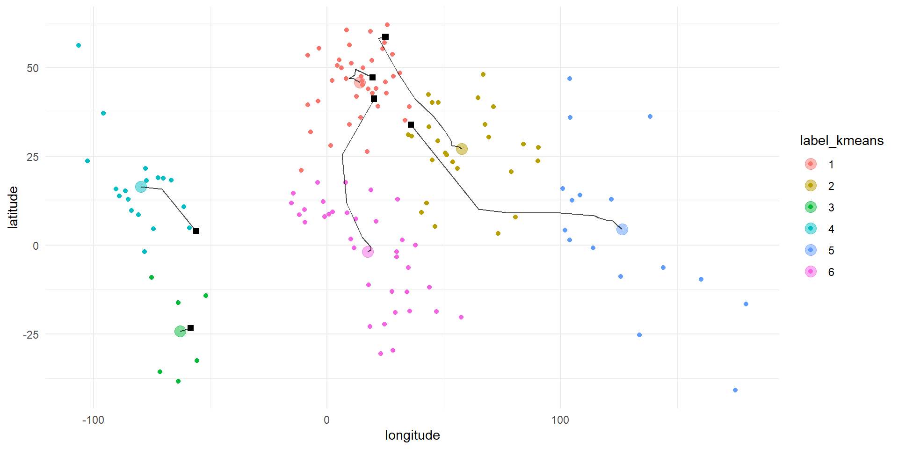
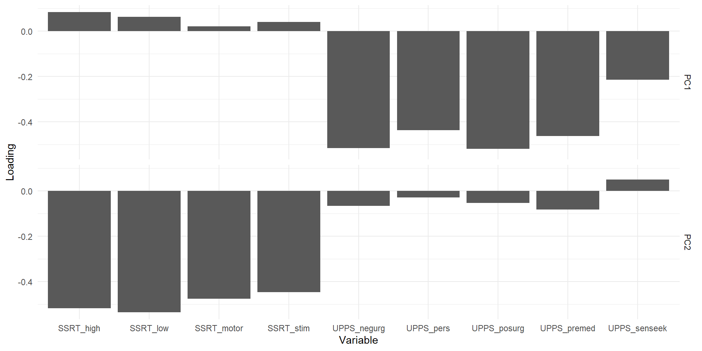

Our general goal is to find the model with the best fit, i.e., that minimizes the error.
GLM
One approach is the GLM. You might be surprised that a lot of the common models can be viewed as linear models:
All models can be thought of as linear models
Definitions
Dependent variable (DV): The outcome variable that the model aims to explain (\(Y\)).
Independent variable (IV): The variable(s) that we use to explain the DV (\(X\)).
Linear model: The model for the DV is composed of a linear combination of IVs (that are multiplied by different weights!)
The weights are the parameters\(\beta\) and determine the relative contribution of each IV. (This is what the model estimates! The weights thus give us the important information we’re usually interested in: How strong are IV and DV related.)
There may also be several DVs (“multivariate statistics”), but usually that’s not the case except for specific biopsychological methods (e.g., fMRI). Thus, we will focus on those cases with one DV!
Example
Let’s use some simulated data:

We can calculate the correlation between the two variables:
Pearson's product-moment correlation
data: df$grade and df$studyTime
t = 2.0134, df = 6, p-value = 0.09073
alternative hypothesis: true correlation is not equal to 0
95 percent confidence interval:
-0.1261283 0.9255245
sample estimates:
cor
0.6349813
r(6) = .63 [-.13; .93], p = .091
The correlation is quite high (.63), but the CI is also pretty wide.
Fundamental activities of statistics:
Describe: How strong is the relationship between grade and study time?
Decide: Is there a statistically significant relationship between grade and study time?
Predict: Given a particular amount of study time, what grade do we expect?
Linear Regression
Use the GLM to…
describe the relation between two variables (similar to correlation)
decide whether an IV is a significant predictor of the DV
predict DV for new values of IV (new observations)
add multiple IVs!
Simple GLM (here: equivalent to linear regression):
\[
y = \beta_0+ x * \beta_x + \epsilon
\]
\(\beta_0\) = intercept: the overall offset of the line when \(x=0\) (this cannot always be interpreted) \(\beta_x\) = slope: how much do we expect \(y\) to change with each change in \(x\)? \(y\) = DV \(x\) = IV or predictor \(\epsilon\) = error term* or residuals: whatever variance is left once the model is fit (Think of the model as the blue line and the residuals are the vertical deviations of the data points from the line)
(If we refer to predicted\(y\)-values, after we have estimated the model, we can drop the error term: \(\hat{y} = \hat{\beta_0} + x * \hat{\beta_x}\).)
The Relation Between Correlation and Regression
There is a close relation and we can convert \(r\) to \(\hat{\beta_x}\).
where the \(df\) are the number of observations \(N\) - the number of estimated parameter \(p\) (in this case 2: \(\hat{\beta_0}\) and \(\hat{\beta_x}\)).
Finally, we can calculate the standard error for the full model:
\[
SE_{model} = \sqrt{MS_{error}}
\]
We can also calculate the SE for specific regression parameter estimates by rescaling the \(SE_{model}\):
With the parameter estimates and their standard errors, we can compute \(t\)-statistics, which represent the likelihood of the observed estimate vs. the expected value under \(H_0\) (usually 0, no effect).
Call:
lm(formula = grade ~ studyTime, data = df)
Residuals:
Min 1Q Median 3Q Max
-10.656 -2.719 0.125 4.703 7.469
Coefficients:
Estimate Std. Error t value Pr(>|t|)
(Intercept) 76.156 5.161 14.756 6.09e-06 ***
studyTime 4.313 2.142 2.013 0.0907 .
---
Signif. codes: 0 '***' 0.001 '**' 0.01 '*' 0.05 '.' 0.1 ' ' 1
Residual standard error: 6.386 on 6 degrees of freedom
Multiple R-squared: 0.4032, Adjusted R-squared: 0.3037
F-statistic: 4.054 on 1 and 6 DF, p-value: 0.09073
The intercept is significantly different from zero (which is usually not very relevant: with 0 study time, you don’t get 0%) and the effect of studyTime is not (or only “marginally”) significant. So for every hour that we study more, the effect on the grade is descriptively rather small (~4%) but possibly not present at all (because it is not statistically significant).
Quantifying Goodness of Fit of the Model
Often, it is useful to check how good the (total) model we estimated fits the data.
We can do that easily by asking how much of the variability in the data is accounted for by the model?
If we only have one IV (\(x\)), then we can simply square the correlation coefficient:
\[
R^2 = r^2
\]
In study time example, \(R^2\) = 0.63² = 0.4 –> we accounted for 40% of the overall variance in grades!
More generally, we can calculate \(R^2\) with the Sum of Squared Variances:
With a sample of sufficient size, it is possible to get highly significant values that still explain very little of the total variance (i.e., little practical significance despite statistical significance)
Fitting More Complex Models
Often we want to know the effects of multiple variables (IVs) on some outcome.
Example:
Some students have taken a very similar class before, so there might not only be the effect of studyTime on grades, but also of having taken a priorClass.
We can built a model that takes both into account by simply adding the “weight” and the IV (priorClass) to the model:
To model priorClass, i.e. whether each individual has taken a previous class or not, we use dummy coding (0=no, 1=yes).
This means, for those who have not taken a class, the whole part of the equation (\(\hat{\beta_2} * priorClass\)) will be zero - we will add it for the others.
\(\hat{\beta_2}\) is thus the difference in means between the two groups!
\(\hat{\beta_1}\) is the regression slope of studyTime across data points/regardless of whether someone has taken a class before.
If we plot the data, we can see that both IVs seem to have an effect on grades:

Interactions Between Variables
We previously assumed that the effect of studyTime on grade was the same for both groups - but sometimes we expect that this regression slope differs per group!
E.g., due to prior knowledge from another class, it may be easier to profit from studying the new materials (i.e., steeper slope). Or it may be harder due to diminishing marginal returns (i.e., flatter slope).
This is what we call an interaction: The effect of one variable depends on the value of another variable.
Thus, priorClass can have a main effect on grade (i.e., independent of studyTime): “I already know more, regardless wether I study”.
But it can also interact with studyTime: “Due to my prior knowledge, I can study more efficiently.”
Interaction Example
Example: What is the effect of caffeine on public speaking?
# perform linear regression with caffeine as independent variablelmResultCaffeine <-lm(speaking ~ caffeine, data = df)summary(lmResultCaffeine)
Call:
lm(formula = speaking ~ caffeine, data = df)
Residuals:
Min 1Q Median 3Q Max
-33.096 -16.024 5.014 16.453 26.979
Coefficients:
Estimate Std. Error t value Pr(>|t|)
(Intercept) -7.4132 9.1653 -0.809 0.429
caffeine 0.1676 0.1508 1.111 0.281
Residual standard error: 19.19 on 18 degrees of freedom
Multiple R-squared: 0.06419, Adjusted R-squared: 0.0122
F-statistic: 1.235 on 1 and 18 DF, p-value: 0.2811

There doesn’t seem to be a “direct” (bivariate) effect:
Interaction Example: Two main effects
What if we have the hypothesis that anxiety also affects public speaking?
Call:
lm(formula = speaking ~ caffeine + anxiety, data = df)
Residuals:
Min 1Q Median 3Q Max
-32.968 -9.743 1.351 10.530 25.361
Coefficients:
Estimate Std. Error t value Pr(>|t|)
(Intercept) -12.5812 9.1967 -1.368 0.189
caffeine 0.1313 0.1446 0.908 0.377
anxietynotAnxious 14.2328 8.2324 1.729 0.102
Residual standard error: 18.21 on 17 degrees of freedom
Multiple R-squared: 0.2041, Adjusted R-squared: 0.1105
F-statistic: 2.18 on 2 and 17 DF, p-value: 0.1436

The new model is still not significant. This is due to the fact that we only look at additive effects (main effects). But neither caffeine nor anxiety alone/independently predict public speaking performance.
From the plot, however, it looks like the effect of caffeine is indeed different for the two anxiety groups: Increasing for non-anxious people and decreasing for anxious ones.
In other words: We need to have a model that allows to fit different regression slopes to both groups.
Interaction Example: Full model
To allow for different slopes for each group (i.e. for the effect of caffeine to vary between the anxiety groups), we have to model the interaction as well.
Call:
lm(formula = speaking ~ caffeine + anxiety + caffeine:anxiety,
data = df)
Residuals:
Min 1Q Median 3Q Max
-11.385 -7.103 -0.444 6.171 13.458
Coefficients:
Estimate Std. Error t value Pr(>|t|)
(Intercept) 17.43085 5.43012 3.210 0.005461 **
caffeine -0.47416 0.09664 -4.906 0.000158 ***
anxietynotAnxious -43.44873 7.79141 -5.576 4.17e-05 ***
caffeine:anxietynotAnxious 1.08395 0.12931 8.382 3.01e-07 ***
---
Signif. codes: 0 '***' 0.001 '**' 0.01 '*' 0.05 '.' 0.1 ' ' 1
Residual standard error: 8.085 on 16 degrees of freedom
Multiple R-squared: 0.8524, Adjusted R-squared: 0.8247
F-statistic: 30.8 on 3 and 16 DF, p-value: 7.014e-07

The model is now significant! There is an interaction between caffeine and anxiety. Interestingly, the main effects are also significant now even though they were not in the previous models (because the residual variance has been reduced drastically from 18 to 8 by the highly significant interaction).
Note: speaking ~ caffeine * anxiety is shorthand for speaking ~ caffeine + anxiety + caffeine:anxiety
Convert GLM to ANOVA
The interpretation of the coefficients of a GLM when interactions are included is not as straight forward compared to an ANOVA!
If you want to report the “typical” ANOVA table with main effects and the general interaction:
Note: The p-values are different between the GLM and the ANOVA outputs because effects including factors are coded slightly differently (dummy vs. effect coding):
Dummy coding uses the first level as a default and compares the remaining levels to it (\(0\) vs. \(1\)).
Effect coding takes the overall mean as an abstract comparison (\(-.5\) vs. \(+.5\)).
This difference is resembled in the output tables as anxietynotAnxious (GLM) vs. anxiety (ANOVA).
Model Comparison
Sometimes, we want to compare two (nested!) models to see which one fits the data better.
We can do so by using the anova()* function in R:
anova(lmResultCafAnx, lmResultInteraction)
Analysis of Variance Table
Model 1: speaking ~ caffeine + anxiety
Model 2: speaking ~ caffeine + anxiety + caffeine:anxiety
Res.Df RSS Df Sum of Sq F Pr(>F)
1 17 5639.3
2 16 1045.9 1 4593.4 70.266 3.01e-07 ***
---
Signif. codes: 0 '***' 0.001 '**' 0.01 '*' 0.05 '.' 0.1 ' ' 1
This shows that Model 2, incl. the interaction, is to be preferred.
Note: We can only meaningfully use this method with so-called nested models, which means that the simpler (reduced) model only contains variables also included in the more complex (full) model.
Criticizing Our Model and Checking Assumptions
“Garbage in, garbage out” - we have to make sure our model is properly specified!
Properly specified = having included the appropriate IVs.
The model also needs to satisfy the assumptions of the statistical method (= GLM).
One important assumption of the GLM is that the residuals are normally distributed.
This assumption can be violated by a not properly specified model or because the data are inappropriate for the statistical model.
We can use a Q-Q plot, which represents the quantiles of two distributions/variables (e.g., the data and a normal distribution of the same data) against each other.
If the data points diverge substantially from the line (especially in the extremes), we can conclude that the residuals are not normally distributed.
Model Diagnostics
To check the assumptions, we can easily run a function for model diagnostics (incl. Q-Q plots) in R. The function, check_model(), is included in the performance package by the easystats team (who make great packages for everything related to statistical modeling!)
We neither mean “predicting before seeing the data/in the future” nor mean to imply causality!
It simply refers to fitting a model to the data: We estimate (or predict) values for the DV (\(\hat{y}\)) and the IVs are often referred to as predictors.
Multivariate Statistics
Multivariate = involving more than one (dependent) variable.
Usually, the distinction between dependent and independent variables is not very strict (rather depends on the model than on the data itself). In the following section, we are interested in how a number of variables relate to one another (no clear predictor vs. criterion).
Clustering: Understand the structure that exists in the data, find clusters of observations or variables that are similar.
=> From dimensions to categories
Dimensionality reduction: Reduce a large set of variables to fewer, retaining as much information as possible.
=> From many dimensions to fewer dimensions
Multivariate Statistics 2
These two methods belong to the class of unsupervised learning. Before, we have only dealt with supervised learning (e.g., regression, ANOVA). There are also methods for multivariate, supervised learning (e.g., MANOVA).
Note: Unsupervised learning techniques are very explorative in nature. It is a different approach to learning from data compared to hypothesis testing. Explorative methods are usually used in science to create a first insight into new phenomena that can develop into hypotheses further down the line.
Multivariate Data: An Example
How do different aspects of psychological function (self-control etc.) relate to one another?
10h battery of cognitive tests and surveys, N = 522, 9 measures of interest!
Measures:
Response inhibition: ability to quickly stop an action (measured with the stop-signal task, measure is called stop-signal reaction time (SSRT) - we have 4 different versions of this measure).
Impulsivity: tendency to make decisions on impulse, without regard of potential consequences (UPPS-P survey, assesses 5 facets of impulsivity).
Visualizing Multivariate Data
Hard (impossible?) for us to visualize more than three dimensions/variables.

Scatterplot of matrices for the nine variables in the self-control dataset. The diagonal elements in the matrix show the histogram for each of the individual variables. The lower left panels show scatterplots of the relationship between each pair of variables, and the upper right panel shows the correlation coefficient for each pair of variables.
Heatmap
Visualize correlations:
Heatmap of the correlation matrix for the nine self-control variables. The brighter yellow areas in the top left and bottom right highlight the higher correlations within the two subsets of variables.
We can see clear clusters: SSRT and UPPS have greater intercorrelations than correlations with the other measure.
Heatmap 2
Heatmaps are especially helpful if we have a large number of variables, such as in neuroimaging! Below you can see the functional connectivity of >300 brain regions:

Heatmap of correlation coefficients of brain activity between 316 regions of the left hemisphere of a single individual. Yellow: strong positive correlations, blue: strong negative correlations
Clustering
Clustering: Identifying groups of related observations or variables within a dataset, based on the similarity of the values of the observations.
Similarity: Distance between values.
Euclidean Distance: Length of the line that connects two data points:
Euclidean Distance is sensitive to variability in both variables –> scale data before! (e.g., z-transformation using R’s scale function)
K-Means Clustering
K-means clustering: Identifies a set of cluster centers & then assigns each data point to the cluster whose center is the closest (Euclidean Distance!).
Decide on value for K, the number of clusters to be found (e.g. based on previous knowledge/expectations).
Come up with k locations for the centers - or centroids - of the clusters (e.g. choose data points at random to start with).
Compute Euclidean distance of each data point to each centroid.
Assign each point to a cluster, based on closest distance to centroid.
Recompute centroid by averaging the location of all points assigned to that cluster.
Repeat steps 1-5 until a stable solution is found (iterative process).
Example: Latitude/Longitude Data
Here we can see the starting points (black squares) and end points (big colored dots) for each cluster, as well as the final cluster assignment of each data point (color):

We can see that there is a reasonable overlap between clusters and continents.
We can further investigate this overlap with the confusion matrix, which compares membership of each cluster with the actual continents for each country:
labels AF AS EU NA OC SA
1 5 1 36 0 0 0
2 3 24 0 0 0 0
3 0 0 0 0 0 7
4 0 0 0 15 0 4
5 0 10 0 0 6 0
6 35 0 0 0 0 0
Note: usually we don’t know the ground truth (i.e. which continent) in unsupervised learning!
=> confusion matrix cannot be estimated
Note 2: Every time we run the iterative process, we will get a different result if we use random starting points. Make sure the result is robust, e.g. by running the Clustering algorithm several times.)
Hierarchical Clustering
Hierarchical Clustering: Also uses distances to determine clusters but also visualizes relationships in dendrograms.
The most common procedure is agglomerative clustering:
Every data point is treated as its own cluster.
Two clusters with the least distance (e.g. average linkage) between them are combined.
Repeat 1 & 2 until only one cluster is left.
Visualize, decide on a cutoff for the amount of reasonable clusters.
Colored lines: different cutoffs.
There seems to be a high degree of similarity within each variable set (SSRT and UPPS) compared to between sets.
=> The first split separates UPPS vs. SSRT perfectly.
Within UPPS, sensation seeking stands out as the most different to the rest.
Dimensionality Reduction
We often measure different variables that are highly similar to each other, e.g. because they are supposed to measure the same construct.
Although we might measure a particular number of variables (= dimensionality of data set), there may be fewer independent sources of underlying information!
Dimensionality reduction: Reduce the number of variables by creating composite variables that reflect the underlying information.
Principal Component Analysis (PCA)
Aim: Find a lower-dimensional (linear) description of a set of variables (that still accounts for the maximum possible information/variance in the dataset).
Variance: Combination of signal + noise –> find strongest common signal between variables!
1st Component: explains most variance between variables, 2nd component: maximum of remaining variance - but uncorrelated with 1st…
Green arrow: 1st component, follows direction of max. variance Red arrow: 2nd component, perpendicular to 1st => uncorrelated!
We can run a PCA on more than two variables!
PCA 2
If we calculate a PCA on the impulsivity data, we see that there are two components (in the scree plot) that account for quite some variance.
We can also look at the variable loadings, which show which variable “goes into” which component to better specify what that component represents. Here we can see that one components represents (=captures variance related to) the SSRT variables, the other the UPPS.

Factor Analysis (FA)
PCA is useful for reducing the dimensionality of a dataset.
The components are per definition uncorrelated –> sometimes this is a limitation.
PCA also doesn’t account for measurement error –> possibly difficult to interpret loadings.
Exploratory Factor Analysis: can also be used for dimensionality reduction.
Idea: Each observed variable is created through a combination of contributions from a latent variable + measurement error. (latent: can’t be directly observed!)
How do different measures relate to underlying factor (that gives rise to these measures)?
FA 2
Factor analysis with Call: fa(r = observed_df, nfactors = 3)
Test of the hypothesis that 3 factors are sufficient.
The degrees of freedom for the model is 7 and the objective function was 0.04
The number of observations was 200 with Chi Square = 7.96 with prob < 0.34
The root mean square of the residuals (RMSA) is 0.01
The df corrected root mean square of the residuals is 0.03
Tucker Lewis Index of factoring reliability = 0.993
RMSEA index = 0.026 and the 10 % confidence intervals are 0 0.094
BIC = -29.13
RMSEA (root mean square error of approximation): Measure of model fit, should be < .08.
Use (lowest) SABIC (sample-size adjusted Bayesian information criterion) to compare models with different number of factors.
Thanks!
Learning objectives:
Describe the concept of the general linear model/linear regression and apply it to a dataset
Understand clustering and dimensionality reduction, incl. the difference between k-means and hierarchical clustering as well as PCA and FA